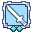

Kagerou Guide (How to be the best Ninja)
|  Kagerou | |||||||||||||||||||
|---|---|---|---|---|---|---|---|---|---|---|---|---|---|---|---|---|---|---|---|
 | |||||||||||||||||||
| |||||||||||||||||||
Overview
Hi everyone! Ready to become the best Ninja of all the times? If yes, search another guide cause im noob as f*, if u only want to learn about Ninjas you are on the right place! My name is Morimega09, also known as Kakagerou/DalasNalgas and i'll guide you on this journey!
Introduction
First of all, i will expose some questions and based on my knownledge the answer:
- Why Ninjas? Aren't here better jobs than Ninjas?
Yes my friend, if you want to play as Ninja u need to know that there's jobs that can do the same job with more efficency, but without the feelings that Ninjas can provide with their Unique Skills.
Ok, first of all we need to know the differences between Oboro and Kagerou:
To play as Oboro u need to be using a Female Characther, select the Ninja Job, and be 99/70, then u can be Oboro.
Same with Kagerou, with the difference that u need to be using a Male Characther.
Oboro
Kagerou
Kagerous differ from their female counterparts due to 3 skills:  Shadow Trampling,
Shadow Trampling,  Empty Shadow and
Empty Shadow and  Shadow Warrior
Shadow Warrior